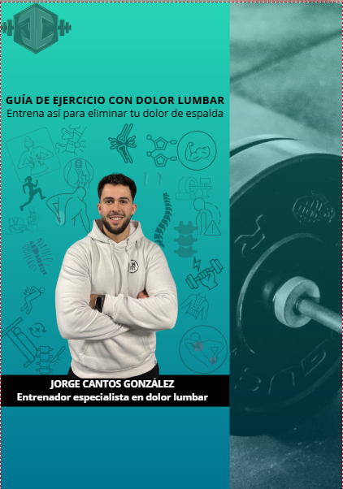

Dolor lumbar recurrente
Te molesta la espalda, no sabes qué ejercicios hacer y acabas evitando moverte por miedo a empeorar.
Te ayudo a reducir dolores lumbares, mejorar tu movilidad y ganar fuerza con un enfoque práctico, progresivo y adaptado a tu caso.
Guías digitales, programas y acompañamiento para entrenar mejor, con menos dolor y más seguridad.
Una rutina práctica para preparar tu cuerpo antes de entrenar, mejorar tu movilidad y empezar a recuperar confianza en tu espalda desde hoy mismo.
Ver rutina gratuitaTe molesta la espalda, no sabes qué ejercicios hacer y acabas evitando moverte por miedo a empeorar.
Entrenas sin una estrategia clara y no consigues mejorar fuerza, movilidad o confianza en tu cuerpo.
Has probado consejos sueltos de redes, pero no sabes qué aplicar realmente a tu caso.
Te explico de forma sencilla qué factores pueden estar influyendo en tu dolor o limitación.
Aprendes qué ejercicios priorizar, cómo progresar y cómo adaptar la carga a tu situación.
El objetivo no es solo sentirte mejor, sino recuperar capacidad funcional y confianza al entrenar.

Recurso digital para comprender mejor tu espalda y empezar a aplicar recomendaciones útiles desde hoy. Además, podrás acceder a un Excel con progresiones y a rutinas completas de movilidad.
Plan estructurado con ejercicios, progresiones y pautas para mejorar movilidad, fuerza y tolerancia al esfuerzo.
Acompañamiento individual para adaptar entrenamiento, resolver dudas y avanzar con una estrategia específica para ti.
“He vuelto a entrenar sin el miedo constante que tenía al dolor lumbar. Ahora entiendo mucho mejor cómo progresar.”
— Cliente 1
“Lo que más me ayudó fue tener una progresión clara y dejar de hacer cosas al azar. He ganado fuerza y seguridad.”
— Cliente 2
“La forma de explicar las cosas es súper clara. Sientes que por fin alguien te da una dirección concreta.”
— Cliente 3
Ayudo a personas que quieren entrenar mejor, moverse con más confianza y dejar atrás el miedo al dolor o a lesionarse.
Mi enfoque combina entrenamiento de fuerza, progresión de cargas, educación y adaptación individual para que mejores de forma realista y sostenible.
Puedes acceder a una guía, seguir un programa o reservar una llamada para ver cuál es la mejor estrategia para tu caso.